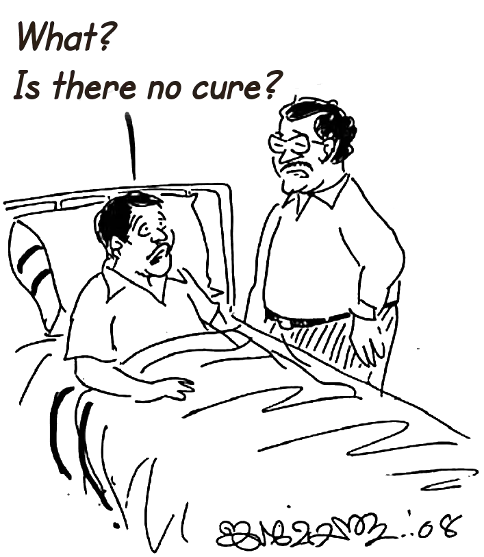

Safe In The Everlasting Arms
A Biography of Mohanan Nair
Safe In The Everlasting Arms
(A Biography of Mohanan Nair)
Publisher: Mohanan Nair
Karunya Bhavan, Kaithachal, Mangattidom PO, Kannur 670643 Kerala
Cell: 9745568090
Author & Illustrator: Jaimohan Athirumkal
Revised Translation: Philip P Eapen
Copyright © 2025 Mohanan Nair
All rights reserved. No part of this book may be reproduced or used in any manner without the prior written permission of the copyright owner, except for the use of brief quotations in a book review.
First Print Edition: February 2008
First Digital Edition: January 2025
Website and eBook created by: Philip Eapen
Contents
- A Note From The Publishers
- Preface
- Dedication
- Preface To The Revised Edition
- Contents
- 1. The Dark Night of Despair
- 2. Early Life
- 3. Disillusionment
- 4. In Search Of The World’s Pleasures
- 5. The Wedding And The Accident
- 6. Driven To Atheism By Desperation
- 7. A Man Sent By God
- 8. A Quest For The Truth
- 9. Shunned By Parents
- 10. The Truth Revealed
- 11. A New Beginning
- 12. Sharing The Gospel For The First Time
- 13. The Mystery Of The Hereafter
- 14. Heaven’s Voice At Midnight
- 15. The Heavenly Lunchbox
- 16. A Spiritual Companion
- 17. A Family Restored
- 18. The Preeminence Of God In Faith And Family
- 19. A Momentous Encounter With God’s Spirit
- 20. Life at Palathinkadavu
- 21. Provision Through Prayer
- 22. Lessons in Obedience and Trust
- 23. Faith in the Midst of Adversity
- 24. Impeccable Integrity
- 25. Faith, Perseverance, and God’s Provision
- 26. Safe In The Everlasting Arms
- 27. God, Our Surety
- 28. Six Years In The Wilderness
- 29. Trusting God’s Timing
- 30. I, Too, Desire To Follow Christ!
- 31. Suffering For Christ’s Sake
- 32. My First Cheque
- 33. A Life Transformed: Faith in Action
- 34. Overcoming Evil With Good
- 35. A Fan Sent From Heaven
- 36. The Priceless Value Of Honesty
- 37. A Shepherd’s Heart
- 38. Beauty Fades, Charm Misleads
- 39. A Short Fuse: A Sinful Trait
- 40. A Rock-Solid Foundation
- 41. Gold Amidst The Dust
- 42. God’s Unfailing Goodness
- 43. Sell Your Property!
- 44. A Home of Compassion: It’s Yours to Build!
- 45. God’s Gift: A Wife Of Virtue
- 46. A Heritage from God: Our Children
- 47. Embrace Loss, Endure Pain
- 48. Behold, My Servant Whom I Uphold!
- 49. The Expansion Of The House Of Compassion
- 50. The Ways God Opens For Us
1
The Dark Night of Despair
The axe bit deep into the towering tree, the rhythmic thwack echoing through the countryside as Mohanan Nair swung it with practised precision. His muscular arms made light work of the task, his love for labour driving him to push through fatigue, often well into the night. Today, however, he’d completed most of his work by midday, with plenty of time to tackle another task he’d in mind.
But God had other plans.
Without warning, the colossal tree groaned and toppled—not in the direction Mohanan had anticipated. A massive branch splintered away and came crashing down, striking him with the force of a hammer. He was flung through the air and hit the ground with a sickening thud. A surge of excruciating pain ripped through him, but it lasted only a fleeting moment before an eerie numbness set in. His legs were lifeless.
Alarmed villagers rushed to his aid and carried him to the modest local hospital in Iritty. By the time they arrived, Mohanan could no longer feel anything below his waist. The staff quickly arranged his transfer to the prestigious Calicut Government Medical College Hospital, known as the region’s foremost medical institution. There, amidst the bustling corridors and impersonal efficiency, Mohanan lay for three gruelling weeks. His days were marked by brief, perfunctory visits from doctors but no meaningful answers or hope.
After twenty-two agonising days, Mohanan begged his elder brother to seek answers directly from the doctor at his residence—a common practice in those days, often yielding better results than hospital consultations. When his brother returned, his sombre silence spoke volumes. Mohanan’s heart sank. His relentless questioning finally broke through his brother’s hesitation. The verdict was devastating: Mohanan was paralysed for life. His spinal cord had been irreparably damaged, and no medical intervention could reverse it.
Mohanan refused to accept this grim diagnosis. He convinced himself it was a convenient excuse for the hospital’s limitations. Determined to seek better care, he turned to their trusted family doctor, Dr Balagopal, who suggested a transfer to the renowned Elite Mission Hospital in Thrissur. Run by Professor Surendran, a highly respected surgeon trained in the United States, the hospital held the promise of expertise and cutting-edge care.
Clinging to hope, Mohanan spent his life savings of Rupees 1,250 to hire an ambulance for the journey. At Elite Mission Hospital, surgeons stabilised his damaged spine, removing fragments of shattered vertebrae. For three long months, he remained under their care, but the bills mounted to a staggering Rupees 20,000—a fortune in those days. The financial burden was eased by contributions from his wife’s family and generous neighbours, but the weight of despair grew heavier with each passing day.
Despite the surgical intervention, the outcome remained bleak. On the day of his discharge, Professor Surendran entered Mohanan’s room, carrying a backrest to help him sit up for the first time since the accident. What should’ve been a moment of triumph felt hollow. The doctor hesitated before breaking the news: “Mohanan, I’m afraid this is the best we can do. Your spinal cord was severed in the accident. Medical science offers no cure.”
The words hit Mohanan like a thunderclap. He screamed in disbelief, pleading for an alternative, a miracle—anything.
The doctor’s voice softened, his own eyes brimming with unshed tears. “I’m sorry. There is nothing more we can do. God bless you.” With that, he turned and left, leaving Mohanan sobbing uncontrollably.
The nurses, over 40 of them, came by to bid him farewell, their warmth and encouragement unable to pierce the fog of despair that enveloped him. In a final gesture of goodwill, the hospital waived his last month’s bills, but Mohanan remained inconsolable.
Back home, his family desperately searched for other avenues. Could the Christian Medical College in Vellore or Kasturba Medical College in Manipal offer a solution? Every enquiry yielded the same answer: no.
Thus began the darkest chapter of Mohanan’s life. Trapped in a broken body, his spirit writhed under the weight of hopelessness. Just eight months into his marriage, with his wife expecting their first child, he was consumed by unanswerable questions. How could he, once the pillar of his family, now be a burden? How could he endure the humiliation of relying on others to feed, clothe, and clean him for the rest of his life?
Sleepless nights became the norm as his mind spiralled into despair. The future seemed like an unrelenting void. He prayed fervently to the gods he had always believed in, pleading for a glimmer of hope. None came. Bitterness and anger consumed him.
The idea of ending his life became a constant companion. The thought, once abhorrent, began to feel strangely comforting—a way to escape the unbearable darkness. Each day, he wrestled with this temptation, his mind teetering on the edge. To live felt like torture; to die, an alluring release.
Mohanan was trapped in an abyss, with no light to guide him out. It seemed as though even hope had abandoned him.
2
Early Life
Mohanan’s father, Kunhikannan, was born in the small hamlet of Chittariparambu near Koothuparamba in Kannur district, situated in the verdant south Indian state of Kerala. Despite being born with only one arm, Kunhikannan was determined to lead a life of dignity. He found work as a headload labourer in the village of Koottupuzha, nestled amidst the lush rainforests of the Western Ghats. His earnings, though modest, were sufficient to support himself and eventually fund his marriage to Lakshmiamma, a woman from an equally old but impoverished Nair family.
The couple went on to have five children, of whom Mohanan was the third. Born in Chittariparambu, Mohanan spent his formative years in Koottupuzha, where the family endured grinding poverty. The constant struggle to make ends meet meant that education was a luxury they could not afford. Mohanan’s older siblings left school before they turned thirteen to help supplement the family income, and he, too, dropped out after completing the sixth grade.
Their village was surrounded by sprawling fields and plantations owned by wealthy families, many of whom were Catholic settlers from southern Kerala. These settlers had carved out new farms from the dense, virgin forest. Mohanan recalls that, despite their Christian identity, they were no different from the other villagers when it came to vices. Addictions, selfishness, quarrels, and even violence were commonplace. The settlers often clashed with Mohanan’s family, and arguments frequently escalated into physical altercations. Their behaviour left a deep impression on young Mohanan, who grew to detest the perceived superiority these settlers derived from their religion, despite their glaring moral failings.
Mohanan’s first job was as a cashew picker on a plantation. He worked tirelessly from 7 a.m. to 7 p.m., earning a meagre 1.5 rupees a day. In addition to plucking cashews, he was often tasked with a range of other duties to fill his workday.
By the age of twelve, Mohanan had taken on gruelling physical labour. He carried heavy loads, felled trees, ploughed fields, and built bunds to protect farmland. As he grew older, his repertoire expanded to include construction work, well-digging, and other agricultural tasks. His father, now severely crippled by arthritis, was no longer able to contribute much to the family’s income. The burden of providing for the household fell squarely on the shoulders of the older children. Mohanan, driven by a fierce sense of responsibility, often took on night shifts after completing a full day’s work, determined to ensure that his younger siblings at least had one meal a day.
One incident from Mohanan’s childhood remained etched in his memory. He was thirteen years old and returning home after a week of back-breaking labour, clutching his wages with a sense of pride. As he neared the house, the sound of his younger siblings’ wails greeted him. His mother, tear-streaked and weary, recounted what had transpired. Desperate to provide for his family, Kunhikannan had resorted to brewing illicit liquor, a desperate measure given his inability to perform physical labour. However, the authorities had caught wind of his activities, and he had been arrested by officials from the Excise Department.
For Mohanan, this was the final straw. In a fit of rage and determination, he seized a chopper and smashed the brewing equipment and the fireplace where it had been set up. Standing amid the wreckage, he declared that such disgrace would never again taint their home. His actions marked a turning point for the family; no one ever attempted to brew liquor again.
The experience left a profound impact on Mohanan. He developed a lifelong aversion to alcohol, seeing it as a source of shame and misery. Not only did he remain abstinent throughout his life, but he also became a vocal advocate against drinking, often admonishing his friends about its destructive consequences.
to Continue Reading …
Buy the e-Book from one of these online book shops.
1. Google Play Books
Purchase the e-Book from Google Play Books website. You need to login using your Google account. .
- You need to install the Google Play Books app on your mobile device to read the book you purchased.
- Open the app and login to see the book you purchased.
- Remember to leave a review on Google Play Books app. Thank you.
2. Amazon
Purchase the e-Book from Amazon.com. You need to login using your Amazon account.
- You need to install the Amazon Kindle app on your mobile device to read the book you purchased. Send the purchased book to your app from Amazon's Devices and Content page.
- Alternatively, you may read the purchased eBook on your Kindle reader. Send the purchased book to your Lindle Reader device from Amazon's Devices and Content page.
- Remember to leave a review of the book on Amazon website. Thank you.
We Welcome Contributions
Direct Bank Transfer
Karunya Charitable Trust For The Disabled
Account Number: 39040373512
IFSC: SBIN0002228
Bank Details:
State Bank of India, Kuthuparambu Branch
Kannur District, Kerala, India
Wish To Send A Gift? Or, send a cheque?
Mohanan Nair
Karunya Bhavan, Kaithachal, Mangattidom PO, Kannur 670643 Kerala
Cell: 9745568090
Karunya Charitable Trust For The Disabled
Karunya Bhavan, Kaithachal, Mangattidom PO, Kannur 670643
Kerala, India
Notes
-
A Hindu is an adherent of Hinduism, one of the world's oldest religions, originating in the Indian subcontinent. Hindus follow diverse beliefs and practices, centred around principles like dharma (righteousness), karma (action and consequence), and moksha (liberation from the cycle of rebirth). They often worship multiple deities, including Vishnu, Shiva, and Lakshmi, though some focus on one supreme being. Sacred texts like the Vedas, Upanishads, and Bhagavad Gita guide spiritual and ethical life. Hinduism emphasises rituals, festivals, yoga, and meditation. Hindus believe in reincarnation and strive for harmony between the self, nature, and the divine, promoting a spiritual way of life.
Hindu society has traditionally been structured by the caste system, a rigid form of social stratification rooted in ancient texts like the Manusmriti. This system divides people into hierarchical groups based on birth: Brahmins (priests and scholars), Kshatriyas (warriors and rulers), Vaishyas (traders and farmers), and Shudras (labourers). Beyond these are Dalits (formerly "Untouchables"), historically relegated to degrading tasks and subjected to severe discrimination. The caste system has perpetuated inequality, limiting access to education, employment, and social mobility for lower-caste communities. Despite legal bans and reforms, caste-based discrimination persists, influencing politics, marriage, and daily life in many parts of India. - The Nairs: The Nair (nāyəɾ) community is a well defined ‘caste’ in Kerala, India. They follow the Hindu religion.
In the Hindu hierarchical ‘caste’ system, Nairs belong to the lowest tier called The Shudras (šuḍrɑ). Still, they were within the caste system. Therefore, they were not regarded as outcastes or untouchables. However, when Hindu social rules were in force, a Nair had to stay thirty-two feet away from Brahmins, the priestly caste!
The Nair Service Society works to strengthen and unite the Nair community. They are a powerful vote bank and a political pressure group, exercising their influence on successive governments.
Before India’s independence in 1947, the Nairs served in royal armies and had their own militias. Therefore, they remained close to political classes and rulers.
The Nair community is one of the few Matriarchial communities in the world. Until a century ago, Nairs never had a well defined nuclear family. The daughters lived with their mother even after their wedding. The official husband of a woman pays her regular visits. However, any man could spend the night with her. The glory and status of a household was often determined by the number of noctural visitors.
Cousin marriage was once a common practice among Nairs. According to this practice, a maternal uncle’s daughter (cousin) is designated as her cousin’s future bride.